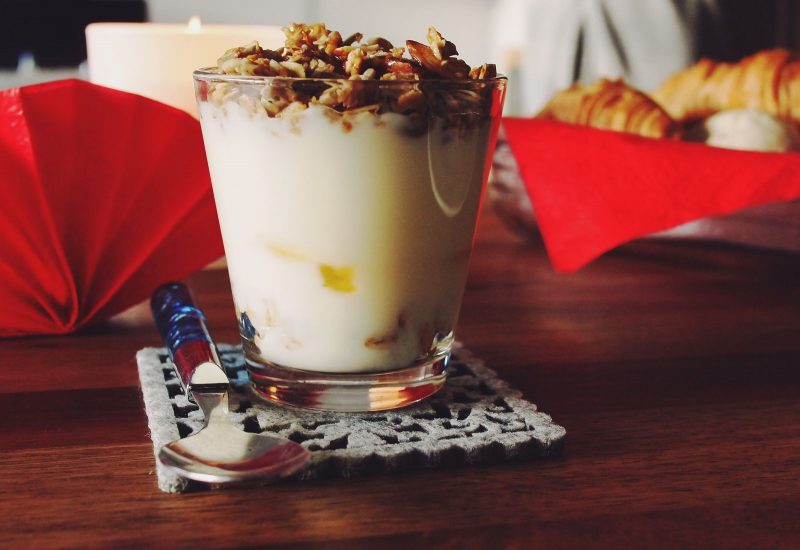

Protein Slop

A delicious, high protein, and flavor-packed slop!
This meal is easily prepared only requiring a handful of ingredients
like sucralose, fruit, oatmeal, cinnamon, and honey if you want some extra sweetness!
ingredients
500g 0% Fage Greek Yogurt
Sucralose
Cinnamon
Oatmeal
Fruit of choice
Honey (optional)
Steps
1. Weigh out 500g of 0% Fage Greek Yogurt into a bowl.
2. Mix in sucralose to taste until you reach desired sweetness.
3. Add your toppings like cinnamon, oatmeal, or your desired fruit.
4. Enjoy!